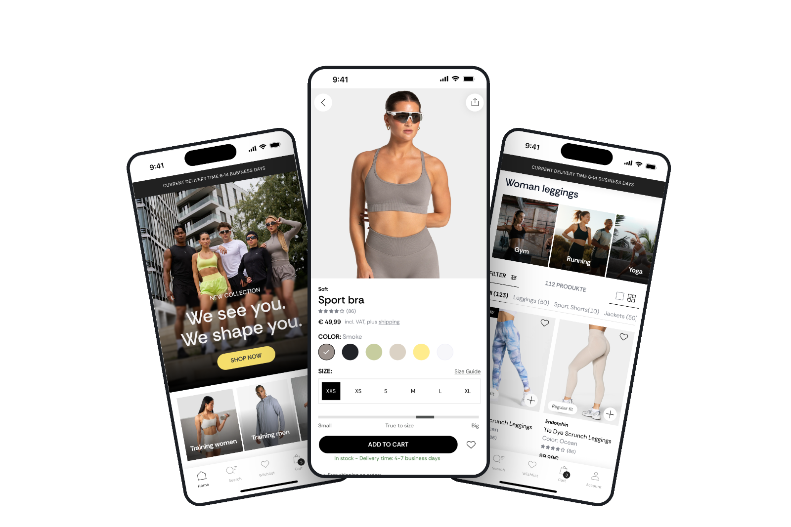
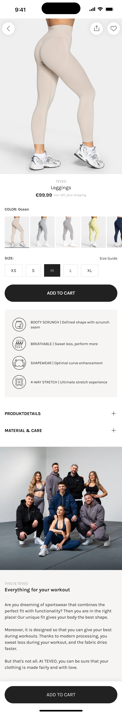

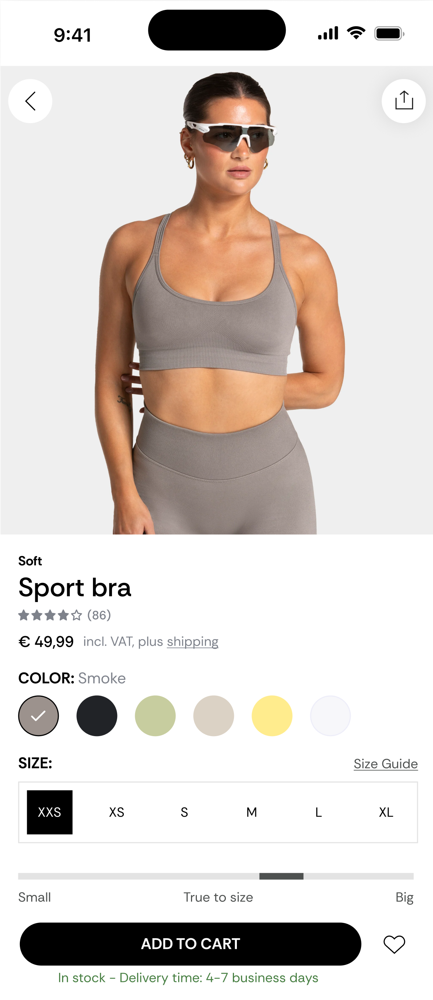
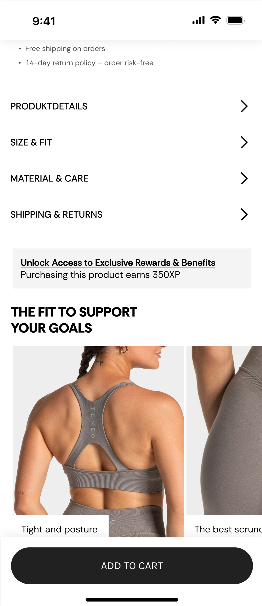
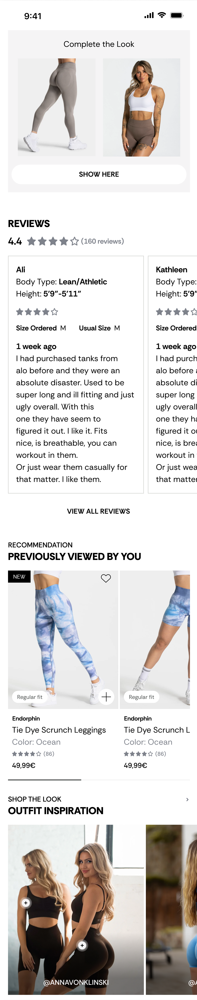

From web redesign to app strategy
Turning a successful web redesign into an app strategy.
Following the successful TEVEO webshop redesign that I led, which contributed to €50M+ in revenue post-launch, I audited the existing mobile app and developed a proposed concept aligned with the web experience. Although the app hasn't been implemented, this project compares the existing app with the redesigned webshop to identify UX gaps, uncover opportunities, and define a clear direction for its next iteration.

01 · Context & problem
Outgrowing the old positioning
TEVEO started as a female-focused leggings brand and has grown into a unisex sportswear company. I had already redesigned the website working closely with the CRO team to place conversion decisions where their data showed users were dropping off.
While the webshop redesign evolved, the app it was outdated, still focused on the old positioning, and missing the improved navigation, trust signals, and conversion patterns already proven on web.
Brand evolution
From female-focused leggings to full unisex sportswear. The web evolved with this shift, but the app was not updated to reflect the new direction.
App vs. web gap
The webshop redesign was successful. The app still carries the old design. Trustpilot reviews reveal inconsistencies in sizing across collections, plus return shipping costs drive customers away before a second purchase.
UX opportunity
Proposed fixes across navigation, homepage, PLP, and PDP, using the same validated patterns already proven on web.
02 · Desk Research
Learning from direct competitors
I reviewed the current TEVEO app against the redesigned website and against common patterns in mobile sportswear retail. I looked at how two direct competitors treat their apps.
Nike leans heavily into layout personalisation
- The app doesn't just recommend content, it restructures itself around how each person actually shops
- Not just recommendations, the entire layout changes based on behaviour
- A scalable design system that remains recognisable across every touchpoint
- Push notifications about new collections, restocks, or order updates
Gymshark treats its app as a retention engine
- App is a retention tool, not a sales channel
- Their XP loyalty program rewards logging workouts and engaging with the brand, not just spending, giving people a reason to open the app on days they're not shopping at all.
- Wishlists that remind users when saved items are back in stock or on sale
- Rewards programs that incentivise repeat purchases
- Relevant content, such as workout plans
Key gaps identified in the Teveo app
- No unisex entry point. Categories and imagery still assume a female shopper, leaving a first-time male visitor without a clear path in. A visitor arriving from TEVEO's current unisex marketing found no obvious route into the range that was being advertised to him. This was a dead end within the first screen.
- Trust signals missing on mobile. Reviews, guarantees, and payment or security badges appear on web but are not carried into the app.
- No support for repeat visits. There is no "previously viewed" feature, every session starts from zero, which affects undecided buyers most.
03 · Key insights
Four themes that shaped everything
Time is precious
Mobile shoppers expect instant access to what they need. Fast search, clear navigation, and relevant recommendations make finding products faster and easier.
Value before action
People need a clear reason to engage. Every feature, banner, or recommendation should add value, not interrupt the path to purchase.
Personal shopping
Users want recommendations based on their actual interests, personalisation needs to start at onboarding.
Tailor the experience
Every user's journey should reflect their preferences, the app should feel like it knows them from session one.
The app strategy was to create a consistent shopping experience across web and app while adapting proven conversion principles for mobile. Every design decision was guided by three objectives:
- Build user confidence throughout the purchase journey.
- Reflect TEVEO's evolution into a broader unisex sportswear brand.
- Make discovering and buying products faster and easier on mobile.
04 · Process & ideation
How the redesign came together
The Product Detail Page was one of the most important areas to rethink because it is where browsing turns into a purchase decision. Instead of redesigning it based on assumptions, I started by looking at what users needed to feel confident enough to buy.
The webshop redesign had already revealed key conversion principles: users need clarity, trust, and enough product information at the right moment. The app PDP needed to bring those same principles into a smaller, more focused mobile experience.

Before

After
Understanding the existing friction
I analysed the current app PDP and compared it with the redesigned webshop experience to identify gaps:
- Important product information was not always visible at the right moment
- Users had to work harder to understand product benefits and differences
- Trust-building elements were limited during the decision-making process
- No structured sizing guidance exists on the product page
The goal was not to add more content, but to make the existing information easier to find and act on.
Designing around purchase confidence
The redesign focused on answering the questions users naturally have before buying:
Is this the right product for me?
→
Improved product presentation, clearer categories, and stronger visual hierarchy helped users understand the
product faster.
Will this fit me?
→ Sizing
information and guidance were prioritised closer to the purchase decision to reduce uncertainty.
Can I trust this product?
→ Reviews,
product benefits, and reassurance elements were brought forward to support confidence.
What makes this product worth
buying?
→ Product details were structured around customer benefits instead of only listing
specifications.
Moving from information display to decision support
The biggest shift was treating the PDP as more than a product information page. Its role is to guide users through a decision.
Every section had a purpose:
- Images create desire and show the product in context
- Key benefits explain why the product matters
- Details answer practical questions
- Trust signals remove hesitation
- The add-to-cart action becomes a natural next step
05 · Key updates
What changed in the redesign

Displaying the price relatively small
This ensures that it is less prominent and therefore feels less heavy or overwhelming for the customer, increasing the value perception of the product.
Key information kept above the fold on mobile
Placing all important information, including product images, reviews, and price, above the fold on mobile ensures that customers immediately see everything they need to make a decision. This reduces the number of scrolls required and maintains attention, which is crucial on small screens.
Clickable product gallery
Enhances the user experience by giving customers an intuitive way to quickly browse images and view different angles of the product. This helps remove doubts and makes it easier to visually assess the product before clicking further. The gallery reduces the chance that customers will leave the page to look for more product information elsewhere, which increases conversion.
Highlighted USPs like free shipping and 14-day returns
Benefits such as "free shipping" and "14-day return policy, order risk-free" lower the purchase threshold and remove concerns about possible risks. This plays into the mere exposure effect, the more often the USPs are highlighted, the better.
Product details, Size & Fit, Material & Care, and Shipping & Returns sections
Helps eliminate doubts and questions from customers by providing direct answers to common inquiries. This enhances usability and allows people to make decisions more quickly and confidently, without having to leave the page to search for information elsewhere. As a result, the likelihood of conversion increases, as customers feel better informed.
Sticky "Add to Cart" button
A powerful CRO technique, especially on mobile. This button remains continuously visible while the user scrolls, lowering the barrier to purchase and putting the action directly within reach. This encourages impulse purchases and prevents customers from dropping out because they do not have to scroll back up to order, which increases the chance of conversion.


Complete the look
Product bundles, such as those here on the PDP, and matching accessories enhance the user experience by offering people a complete look that meets their needs. This simplifies the decision-making process, saves time, and increases the likelihood of a higher average order value (AOV), as customers tend to purchase more products in a single transaction. Bundles effectively cater to convenience and provide an appealing, comprehensive solution.
A "Previously viewed by you" section
Reminds visitors of products they have previously viewed, helping potential buyers easily return to items that interested them without having to search again. This increases the chance of conversion and strengthens purchase intention, especially among doubting customers.
Social proof via user-generated content
This section leverages short-form video content (TikTok-style) where influencers and customers showcase TEVEO products. The integration of real users enhances trust and aligns with the rise of authentic, community-driven marketing.
Reviews filterable by value for money, sizing, and quality
Allowing customers to filter reviews, including the lowest ratings, improves transparency and builds trust. Seeing both positive and negative experiences helps reduce doubts, supports informed decisions, and increases conversion confidence.
06 · Reflection
Reflection
Working on the web redesign taught me that a good digital product isn't defined by any single screen, it's defined by whether the experience holds together across every way a customer meets the brand. The strategy behind the app uses trust signals, personalisation, and journey clarity to help users feel confident before making a purchase.
The real value wasn't in coming up with something completely new. I started with what we already knew worked. The webshop redesign had already validated many of the key decisions, so my job was to carry those learnings into the app instead of chasing new ideas.
The next step would be validating these recommendations with a small round of usability testing against the current app, the same way we validated decisions on the web.